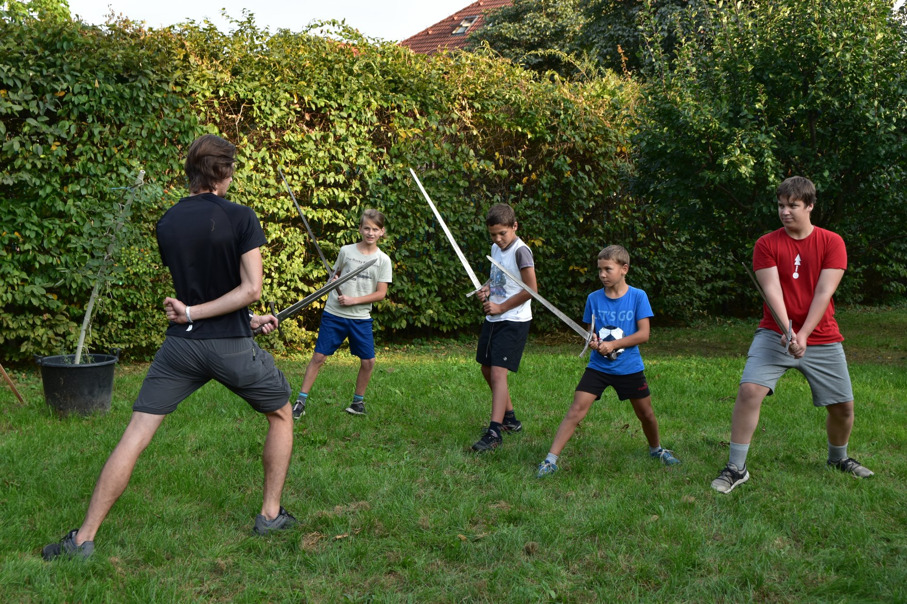

Na kroužku scénického historického šermu se přeneseme o několik století do minulosti,
abychom si vyzkoušeli to nejrůznější z šermířského umění, ať už to jsou postoje, kryty, seky či triky.
K tomu máme k dispozici rozličné typy zbraní, od holí přes dřevěné a železné meče až po sekyry.
Jednotlivé naučené prvky spojíme do soubojů. K tomu, aby souboje vypadaly dobře, se budeme věnovat základům divadla (proto šerm scénický).
Co se naučíme, pak budeme mít příležitost předvést na akcích Salesiánského střediska a na akcí skupiny Baggar.
Vedle šermu a divadla se dostane na vybraná témata z historie.
Přes rok pořádáme několik jednodenních a víkendových akcí, včetně účasti na dřevárenských bitvách, výroby kostmů a zbraní a soustředění.
